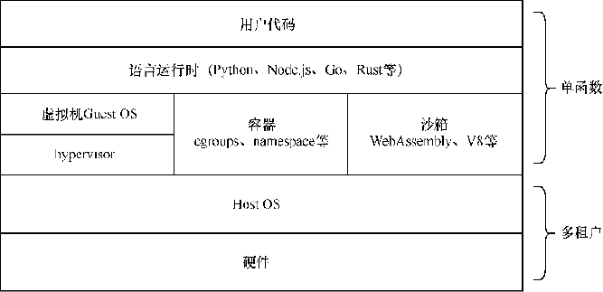

首页 > 编程笔记
Serverless到底是什么？
Serverless 是从面向基础设施到面向应用的演进，本文将介绍 Serverless 的基础知识和应用场景。
下面我们从 Serverless 理念出发，列举并阐述 Serverless 技术特点，进而引出在 Serverless 领域比较具象的 FaaS（Function as a Service，函数即服务）、BaaS（Backend as a Service，后端即服务）的产品形态。
回顾其 10 年的发展历程，各大云厂商相继推出 Serverless 的云产品，开源生态中 Serverless 的项目也崭露头角，从最初的概念定义到发展中的概念重塑，Serverless 逐渐被赋予更加广阔的含义。
与传统架构相比，Serverless 有如下特点。
这种按需使用和付费方式的转变，让整体的资源分配从计划模式走向按需分配模式，不仅让用户受益，也让 Serverless 平台的运营者可以充分地利用统一调度的优势，不断优化系统，最终达到资源使用效率最大化的目标。
Serverless 平台可以获取足够多的请求周边数据，如服务负载信息、请求延迟信息等，对应用实例进行横向和纵向的扩缩容。
在平台方收集足够的历史数据后，可以利用机器学习等方式，对流量进行预测来指导扩缩容，提前扩缩容的动作可以让应用实例更加从容地面对流量，减少冷启动请求的“毛刺”，从而使服务状态更加稳定。
例如针对在线调用，Serverless 平台会提供一个网关触发器来承载业务流量。开发者可以轻而易举地接入特定的触发源，更深层次的用意是让 Serverless 平台有能力感知和控制流量的流入。对于流量的强管控，可以让 Serverless 平台进行一些并发的控制、限流、无流量的缩零、冷启动流量的实例拉起等操作。
因此，事件驱动机制自然成为 Serverless 中新的计算范式。
快速启动的前提是，应用程序需要在“沙箱”中运行，在不同的应用场景中有不同等级的资源隔离需求，运行时沙箱需要足够轻量，以尽量减少服务运行时所需的系统开销，保证启动速度足够快。
运行时的分层体系如图1所示，从上至下，不同的语言会有相应的语言运行时（runtime）：
函数运行时的分层体系：
底层宿主机可以使用传统物理机，也可以使用裸金属方案达到底层资源的弹性、灵活供给。
Serverless 以 FaaS 作为底层各个基础组件的“黏合剂”，对接消息队列、对象存储事件、数据库 binlog 等，高效完成事件处理领域的开发需求。
Serverless 支持微服务体系、HTTP（hypertext transfer protocol，超文本传送协议）服务、RPC（remote procedure call，运程过程调用）服务、异步模式，支持 PaaS（Platform as a Service，平台即服务）到FaaS的演进。
FaaS 产品主要提供的技术能力如下：
Serverless 主要有如下应用场景。
通过 API（application programming interface，应用程序接口）网关（gateway）的形式原生支持在线流量的入口，可以完成微服务之间的调用。
同时 FaaS 产品会提供原生的监控、日志、报警等功能，帮助开发者完成端到端的服务落地。
值得一说的是，以上的微服务能力不仅包含 HTTP 框架类的应用，也涵盖主流 gRPC/Thrift RPC 等框架的应用，进一步扩展了微服务在 FaaS 产品上的表达能力。
针对各种消息队列产品，消费的逻辑可以被抽象成各类触发器，作为 FaaS 产品的事件触发源。用户就无须关心消费消息队列的复杂逻辑，特别是在多机房容灾、消费调度分配等场景，平台提供消费的托管型方案，用户只需关心处理数据的代码逻辑，然后 FaaS 产品自动扩缩容，以应对波峰、波谷场景，获得快速接入、敏捷开发、低成本和少运维的收益。
视频编解码是典型的资源密集型短任务场景，函数计算可以控制单实例的并发处理，按需进行横向扩缩容，根据视频文件的流量来进行自动的资源供给，针对短任务的调度和运行是 FaaS 绝佳的应用场景之一。
在 FaaS 产品上开发小程序生态，一般会内置周边生态的支持，提供 SDK（software development kit，软件开发工具包）对接各种常用 BaaS 产品，同时 FaaS 产品敏捷开发、快速发布的特点可以让小程序开发者迅速地把想法落地、快速迭代。
如要进一步考虑后续小程序的上线运营、热点事件的流量不确定性，可以利用 Serverless 自动伸缩的能力，解放运维负担。
因此，小程序开发也是 Serverless 的一个重要应用场景。
通过 FaaS 产品异步任务的支持，用户只需要提交任务，已经提交的任务会在 FaaS 产品的内部系统中进行存储和排队，按照服务设置的节奏来进行分发处理。使用 FaaS 产品批处理异步任务，用户无须在 FaaS 之外维护额外的存储队列，可减少组件的运维负担。
批处理异步任务一般具有瞬时提交的特点，其瞬间的波峰、波谷尤为明显，这也比较契合 Serverless 的能力特点。
另外，在一些对时效要求严苛的场景，系统可以在定时任务被触发之前，预先冷启动实例，如此触发时间的准确性就会得到更好的保障。
在边缘场景中，FaaS 产品的典型特征是边缘机房资源相对中心机房而言明显受限，在有限的资源供给下，需要更加轻量的运行时来降低业务请求之外的系统消耗，同时边缘场景大部分是针对延迟敏感型应用进行优化的，需要整体轻量的架构和精简的请求链路来承载业务的请求，才可以达到毫秒级别的冷启动能力。
针对边缘场景，以 WebAssembly、V8 作为运行时基础的精简架构，成为一个明显的趋势。
在获得 Serverless 特性的基础上，追求更加极致的冷启动性能和降低系统开销，同时保证多租户的安全隔离能力，是边缘场景下 FaaS 产品的建设目标。
针对 Serverless 提供的技术能力，本文列举了 Serverless 的比较主流的几个应用场景并对其进行了说明，希望通过对这些应用场景的介绍，让读者有一些启发，引导读者进一步拓展 Serverless 的技术能力和应用边界。
1. Serverless 的基本概念
Serverless 理念从狭义的解释逐步延伸出更广阔的含义，不过其中蕴含的技术特点有相对统一的共识。下面我们从 Serverless 理念出发，列举并阐述 Serverless 技术特点，进而引出在 Serverless 领域比较具象的 FaaS（Function as a Service，函数即服务）、BaaS（Backend as a Service，后端即服务）的产品形态。
1) Serverless 理念
Serverless 的概念诞生已久，从 2012 年 Serverless 概念首次被提出，到 2014 年 Amazon 发布 AWS Lambda 产品实践 Serverless 架构模式，再到 2018 年 Gartner 将 Serverless Computing 列为十大未来影响基础设施和运维的技术趋势之一，业界基本认可了 Serverless。回顾其 10 年的发展历程，各大云厂商相继推出 Serverless 的云产品，开源生态中 Serverless 的项目也崭露头角，从最初的概念定义到发展中的概念重塑，Serverless 逐渐被赋予更加广阔的含义。
2) Serverless 技术特点
Serverless 在演进过程中催生了 Serverless 生态极致弹性、精益成本、快速交付的特性，能助力业务架构的迭代升级。与传统架构相比，Serverless 有如下特点。
① 按需使用
Serverless 让用户不再关心底层基础设施的产生和管理，Serverless 平台会根据服务的实际流量创建计算和存储资源，当服务没有流量时，对应的资源会被自动回收，用户只需要对实际流量消耗的资源进行付费。这种按需使用和付费方式的转变，让整体的资源分配从计划模式走向按需分配模式，不仅让用户受益，也让 Serverless 平台的运营者可以充分地利用统一调度的优势，不断优化系统，最终达到资源使用效率最大化的目标。
② 弹性伸缩
大多数计算产品根据应用负载和算力来进行扩缩容，而 Serverless 平台针对请求层面弹性伸缩，其粒度更细。Serverless 平台可以获取足够多的请求周边数据，如服务负载信息、请求延迟信息等，对应用实例进行横向和纵向的扩缩容。
- 横向的扩缩容是对流量的反应，更多的流量意味着需要更多数量的实例来承载；
- 纵向的扩缩容是对单个应用实例资源的调整，在单实例、多并发的场景下可以有效地减少应用碎片和额外的系统开销。
在平台方收集足够的历史数据后，可以利用机器学习等方式，对流量进行预测来指导扩缩容，提前扩缩容的动作可以让应用实例更加从容地面对流量，减少冷启动请求的“毛刺”，从而使服务状态更加稳定。
③ 事件驱动
应用程序被托管在 Serverless 平台之上，开发者需要通过事件驱动（event driven）的方式来触发对应用程序的调用，Serverless 平台一般会提供各式各样的触发器，来联动打通各个基础架构组件。例如针对在线调用，Serverless 平台会提供一个网关触发器来承载业务流量。开发者可以轻而易举地接入特定的触发源，更深层次的用意是让 Serverless 平台有能力感知和控制流量的流入。对于流量的强管控，可以让 Serverless 平台进行一些并发的控制、限流、无流量的缩零、冷启动流量的实例拉起等操作。
因此，事件驱动机制自然成为 Serverless 中新的计算范式。
④ 函数运行时
业内有一个说法：如果你的 PaaS 能够在 20ms 内启动实例并能运行 0.5s，就可以将其称为 Serverless。
这种说法比较直观，其底层逻辑是表达一种瞬生瞬灭的能力，即当服务实例可以在极短的时间内产生和消亡时，弹性伸缩就会达到极致的效果。快速启动的前提是，应用程序需要在“沙箱”中运行，在不同的应用场景中有不同等级的资源隔离需求，运行时沙箱需要足够轻量，以尽量减少服务运行时所需的系统开销，保证启动速度足够快。
运行时的分层体系如图1所示，从上至下，不同的语言会有相应的语言运行时（runtime）：
- 解释型语言的用户代码会在运行时被动态加载到各种语言提供的语言运行时中；
- 编译型语言一般会提供一些代码包，一起编译、打包到用户的应用程序中。
函数运行时的分层体系：
- 针对需要强隔离的场景，会使用轻量虚拟机方式进行隔离；
- 针对私有云内部场景，为了减少虚拟机监控器（hypervisor）的消耗，会使用容器技术中常用的 cgroups 和 namespace 进行一些资源基础限制和隔离；
- 针对一些极致轻量级场景，会利用进程沙箱机制，如 WebAssembly、V8 等技术来进行隔离，以在有限的接口表达和极致冷启动方面寻求最佳平衡。
底层宿主机可以使用传统物理机，也可以使用裸金属方案达到底层资源的弹性、灵活供给。

图1：运行时的分层体系
图1：运行时的分层体系
2. Serverless 技术能力
Serverless 领域包含 FaaS 和 BaaS：- BaaS 涵盖广义的第三方服务，例如经典的对象存储服务、数据库存储服务、缓存服务等。
- FaaS 是 Serverless 领域中计算引擎的一个重要产品形态，其遵循服务函数化理念，支持一键创建和部署函数，能够屏蔽资源和运维细节，极大地降低开发者的开发和运维成本。
Serverless 以 FaaS 作为底层各个基础组件的“黏合剂”，对接消息队列、对象存储事件、数据库 binlog 等，高效完成事件处理领域的开发需求。
Serverless 支持微服务体系、HTTP（hypertext transfer protocol，超文本传送协议）服务、RPC（remote procedure call，运程过程调用）服务、异步模式，支持 PaaS（Platform as a Service，平台即服务）到FaaS的演进。
FaaS 产品主要提供的技术能力如下：
- 支持 Go、Python、Node.js、Rust、Java 等定义函数或者服务，提供依赖管理和部署发布的能力；
- 支持消息队列、对象存储触发器、数据库 binlog 触发器、定时触发器以及 HTTP 调用；
- 支持原生 HTTP，用户可搭建原生 HTTP 应用；
- 支持 gRPC/Thrift RPC，用户可搭建原生 RPC 应用；
- 支持轻量级运行时 WebAssembly、V8，以及配套的 Global KV、Local Cache 等存储产品，部署云端和边缘机房。
3. Serverless 应用场景
Serverless 透过比较成熟的 FaaS 产品展示和具体的技术能力，在行业内衍生出各种应用场景和最佳实践。Serverless 主要有如下应用场景。
① 微服务
开发者可以使用 FaaS 产品提供的模板框架，填充业务的处理逻辑代码，轻而易举地开发和部署一个服务。通过 API（application programming interface，应用程序接口）网关（gateway）的形式原生支持在线流量的入口，可以完成微服务之间的调用。
同时 FaaS 产品会提供原生的监控、日志、报警等功能，帮助开发者完成端到端的服务落地。
值得一说的是，以上的微服务能力不仅包含 HTTP 框架类的应用，也涵盖主流 gRPC/Thrift RPC 等框架的应用，进一步扩展了微服务在 FaaS 产品上的表达能力。
② 流式处理消息
在流式处理消息的场景中，一般会有消息队列产品作为中间件来缓存消息，所以消费消息队列是在日常开发中经常需要考虑的场景。针对各种消息队列产品，消费的逻辑可以被抽象成各类触发器，作为 FaaS 产品的事件触发源。用户就无须关心消费消息队列的复杂逻辑，特别是在多机房容灾、消费调度分配等场景，平台提供消费的托管型方案，用户只需关心处理数据的代码逻辑，然后 FaaS 产品自动扩缩容，以应对波峰、波谷场景，获得快速接入、敏捷开发、低成本和少运维的收益。
③ 视频编解码任务处理
视频文件一般存放在对象存储系统中，FaaS 产品提供的对象存储触发器，可以直接进行业务逻辑的联动，例如自动感知文件的新增事件，使用 FaaS 产品进行对应的业务逻辑处理加工，等等。视频编解码是典型的资源密集型短任务场景，函数计算可以控制单实例的并发处理，按需进行横向扩缩容，根据视频文件的流量来进行自动的资源供给，针对短任务的调度和运行是 FaaS 绝佳的应用场景之一。
④ 小程序开发
小程序开发是面向固定生态的开发模式，程序的鉴权、接入、存储、通知等功能基本上是标配。在 FaaS 产品上开发小程序生态，一般会内置周边生态的支持，提供 SDK（software development kit，软件开发工具包）对接各种常用 BaaS 产品，同时 FaaS 产品敏捷开发、快速发布的特点可以让小程序开发者迅速地把想法落地、快速迭代。
如要进一步考虑后续小程序的上线运营、热点事件的流量不确定性，可以利用 Serverless 自动伸缩的能力，解放运维负担。
因此，小程序开发也是 Serverless 的一个重要应用场景。
⑤ 批处理异步任务
视频编解码的短任务是适合 FaaS 产品的一个天然应用场景，一般短视频或者经过切片后的视频短任务处理时间比较短，可以使用传统的同步请求模式，但是不乏一些场景需要 FaaS 产品单个请求有更长的执行时间，并且用户希望能更简单地管理任务。通过 FaaS 产品异步任务的支持，用户只需要提交任务，已经提交的任务会在 FaaS 产品的内部系统中进行存储和排队，按照服务设置的节奏来进行分发处理。使用 FaaS 产品批处理异步任务，用户无须在 FaaS 之外维护额外的存储队列，可减少组件的运维负担。
批处理异步任务一般具有瞬时提交的特点，其瞬间的波峰、波谷尤为明显，这也比较契合 Serverless 的能力特点。
⑥ 定时任务
定时任务也是一个日常开发中比较常见的场景需求，在 FaaS 产品中会使用定时任务，因为 FaaS 产品具有快速启动的特点，定时任务的时效可以得到更好的保障。另外，在一些对时效要求严苛的场景，系统可以在定时任务被触发之前，预先冷启动实例，如此触发时间的准确性就会得到更好的保障。
⑦ 边缘场景
FaaS 产品本身以轻量级、快速冷启动著称。在边缘场景中，FaaS 产品的典型特征是边缘机房资源相对中心机房而言明显受限，在有限的资源供给下，需要更加轻量的运行时来降低业务请求之外的系统消耗，同时边缘场景大部分是针对延迟敏感型应用进行优化的，需要整体轻量的架构和精简的请求链路来承载业务的请求，才可以达到毫秒级别的冷启动能力。
针对边缘场景，以 WebAssembly、V8 作为运行时基础的精简架构，成为一个明显的趋势。
在获得 Serverless 特性的基础上，追求更加极致的冷启动性能和降低系统开销，同时保证多租户的安全隔离能力，是边缘场景下 FaaS 产品的建设目标。
4. 总结
本文从 Serverless 的理念出发，概述了 Serverless 的按需使用、弹性伸缩、事件驱动和函数运行时等技术特点，引出了比较主流的 FaaS、BaaS 的概念。针对 Serverless 提供的技术能力，本文列举了 Serverless 的比较主流的几个应用场景并对其进行了说明，希望通过对这些应用场景的介绍，让读者有一些启发，引导读者进一步拓展 Serverless 的技术能力和应用边界。
关注公众号「站长严长生」，在手机上阅读所有教程，随时随地都能学习。内含一款搜索神器，免费下载全网书籍和视频。

微信扫码关注公众号